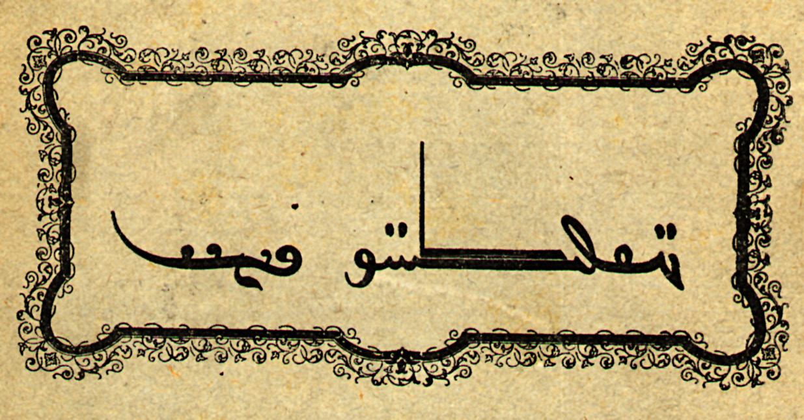

İÇİNDEKİLER
Kutadgu Bilig’in Adına, Mânâsına Dair
Türk Tarihinde Bir Dönüm Noktası: Kutadgu Bilig
Kutadgu Bilig’in Diğer Özellikleri
Kutadgu Bilig’den Bir Demet Özdeyiş
İKİNCİ BÖLÜM / Saadet ki Aya Benzer!
İÇİNDEKİLER
Kutadgu Bilig’in Adına, Mânâsına Dair
Türk Tarihinde Bir Dönüm Noktası: Kutadgu Bilig
Kutadgu Bilig’in Diğer Özellikleri
Kutadgu Bilig’den Bir Demet Özdeyiş
İKİNCİ BÖLÜM / Saadet ki Aya Benzer!

Ukuş körki til ol, bu til kör ki söz,
Kişi körki yüz ol, bu yüz kör ki köz
Aklın süsü dildir, dilin süsü söz,
İnsanın süsü yüzdür, yüzün süsü de göz